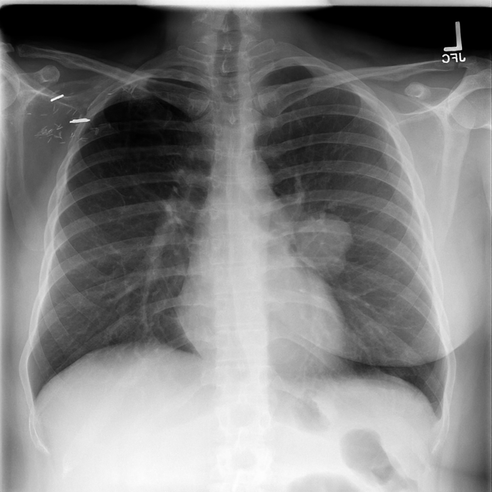

The Problem: Enhancing DRRs for Clinical Use
Early detection of lung cancer through chest X-rays (CXRs) is critical for patient outcomes, but subtle nodules are notoriously difficult to spot, and labeled datasets are scarce. Digitally Reconstructed Radiographs (DRRs)—synthetic X-rays generated by projecting CT volumes—offer a scalable solution for creating training data. However, DRRs suffer from significant quality issues: blur, loss of fine anatomical structures, and projection artifacts.
The challenge is clear: how do we enhance these DRRs to match real X-ray quality while preserving the clinically important details—especially subtle lung nodules that could indicate early-stage cancer?
Example DRR Images
Here are examples of DRRs generated from CT scans. Notice the characteristic blur and lack of fine detail compared to real radiographs:
Why Standard Super-Resolution Fails
Our first instinct was to try established super-resolution methods. The idea seems straightforward: generate paired low-quality/high-quality data using standard degradations (like bicubic downsampling), then train a model to reverse the process. We tried state-of-the-art transformer-based methods including SwinFIR and SwinIR.
The results were disappointing. These methods are trained on natural image degradations that don't match the unique characteristics of DRR artifacts. The models produced over-smoothed outputs that lost critical fine-grained details.
Key Insight: The fundamental problem is the domain gap. Standard degradation models (bicubic, Gaussian blur) don't capture the real characteristics of DRR artifacts. We need to learn the actual degradation distribution from real data.
Our Approach: DiffusionXRay
DiffusionXRay is a two-stage pipeline that addresses the domain gap by first learning realistic degradations, then training an enhancement model on properly paired data.
Stage 1: Learning Realistic Degradations
Instead of assuming a degradation model, we learn it from data using two complementary approaches:
MUNIT-LQ: Unpaired Style Transfer
MUNIT (Multimodal Unsupervised Image-to-Image Translation) disentangles images into content and style components. We use it to transfer the "style" of low-quality DRRs onto high-quality X-rays while preserving their anatomical content. This gives us realistic LQ-HQ pairs without requiring aligned training data.
DDPM-LQ: Diffusion-Based Degradation
We also train a conditional Denoising Diffusion Probabilistic Model (DDPM) to learn the degradation distribution. The training proceeds in two sub-stages:
Unconditional training on real low-quality DRRs to learn the LQ distribution.
Conditional fine-tuning on HQ images to generate realistic paired LQ versions.
Stage 2: DDPM-HQ Enhancement
With realistic paired data from Stage 1, we train a conditional DDPM enhancer. Unlike the degradation models that learn to add artifacts, DDPM-HQ learns to remove them while faithfully reconstructing fine anatomical details.
The diffusion framework is particularly well-suited for this task because it can model complex, multi-modal distributions—exactly what's needed when the "correct" enhancement isn't unique but depends on preserving different types of clinical findings.
Results
Qualitative Comparison
The following comparisons show enhancement results on test images. Each row shows: input (degraded), our DiffusionXRay result, and the reference high-quality image.
Sample 1

Reference (HQ)
Sample 2

Reference (HQ)
Sample 3

DiffusionXRay (Ours)

Reference (HQ)
Comparison with Baseline Methods
Here we compare against baseline methods including bicubic interpolation and standard enhancement pipelines:
Quantitative Results
| Method |
PSNR ↑ |
SSIM ↑ |
| With MUNIT-LQ Generated Data |
| Bicubic-DDPM (Baseline) |
20.08 |
0.83 |
| DiffusionXRay (Ours) |
27.50 |
0.92 |
| With DDPM-LQ Generated Data |
| DDPM-LQ Baseline |
19.85 |
0.78 |
| DDPM-LQ (Ours) |
22.21 |
0.78 |
Our method achieves a +7.42 dB improvement in PSNR and +0.09 improvement in SSIM over the bicubic baseline when using MUNIT-LQ for degradation synthesis.
Radiologist Evaluation
Quantitative metrics only tell part of the story. We conducted a blinded evaluation with expert radiologists to assess clinical utility:
| Evaluation Task |
Question |
DiffusionXRay |
Baseline |
| Nodule Preservation |
Nodule easily visible? |
100% |
6.6% |
| Confusion with other structures? |
0% |
30% |
| Quality Assessment |
Lung field clarity improved? |
100% |
66.7% |
| Significant noise increase? |
72.9% |
25% |
Clinical Significance: 100% nodule visibility with 0% confusion represents a clinically meaningful improvement. The 72.9% perceived noise reflects a purposeful trade-off: we prioritize diagnostic conspicuity over smoothing, ensuring that subtle findings remain visible even if the image appears slightly noisier.
Citation
@inproceedings{goyal2025diffusionxray,
title = {DiffusionXRay: A Diffusion and GAN-Based Approach for
Enhancing Digitally Reconstructed Chest Radiographs},
author = {Goyal, Aryan and Mittal, Ashish and Rao, Pranav and
Tadepalli, Manoj and Putha, Preetham},
booktitle = {DEMI Workshop, MICCAI},
year = {2025},
}